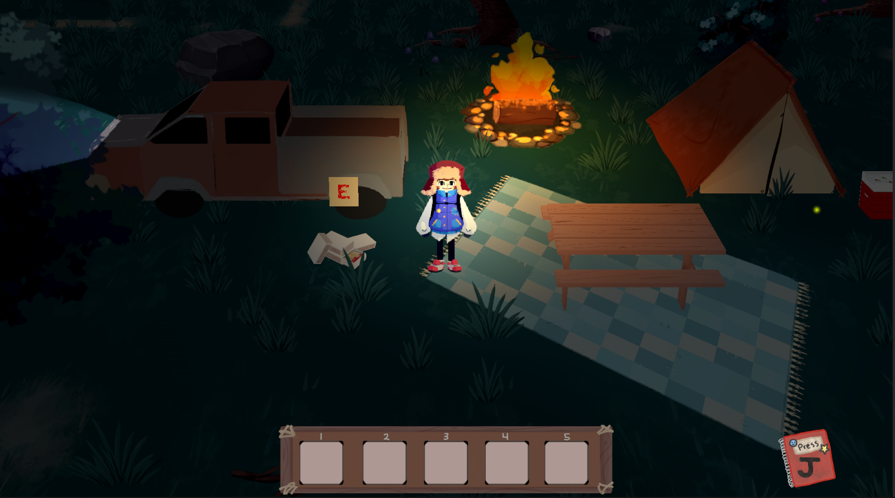
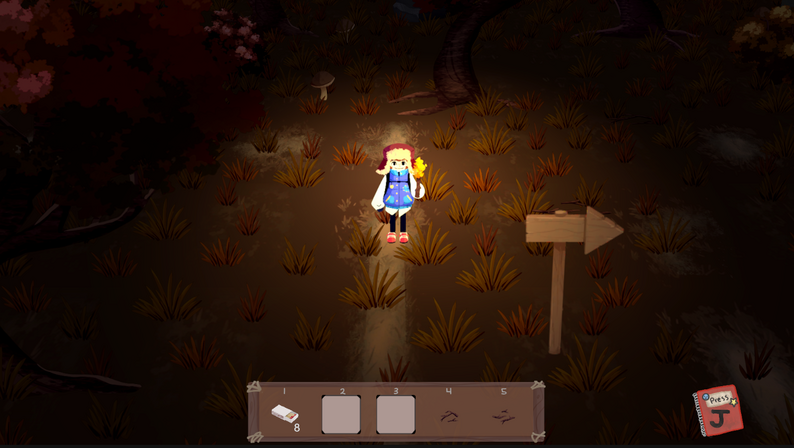

The Underbrush
- 
- 
- Role: Co-Producer, Game Designer, System Designer, Programmer
- Platforms: Windows, MacOS
- Team Size: 8 with 5 mentors from Blizzard
- Duration: 4 Months
- Responsibilities:
- Communicating with Blizzard mentors through Discord and weekly meetings.
- Helped create and pitch presentations to the class and Blizzard mentors
- Preparing weekly game builds and updating our webpage for the Blizzard mentors.
- Managing peer and mentor feedback to be addressed by the team.
- Assisting in coordinating team meetings and checking in with team progress.
- Helped complete the various documentation and paperwork needed for our workflow.
- Leading the design front by designing and documenting a majority of the game.
- Programmed and bug fixed many of the systems and managers overseeing the game.
- Implementing most of the art and sound assets created by the team into the game
-
Game Summary
"The Underbrush is an 2.5D eerie adventure game where you play as a inquisitive young child who scours the woods in search of mythical cryptids while out camping with their father."
The Underbrush was a student project that I co-led during Spring semester of 2022. This project started in the last class of my Game Design minor. During this class we were split into teams of 8 and paired with mentors from 5 different AAA game companies to work with us during the project. Our team was paired with mentors from Blizzard. The mentors were there to guide us and help us while also pushing us to uphold the AAA standards. -
Primary Role
My primary role was as Co-Producer for the project. I helped lead the team by, coordinating team meetings, managing feedback, maintaining workflow goals, and many more managerial duties. Our project was plagued with many different challenges that required a lot of us producers. It has been the tallest task I've faced to date, but I relied on collaboration with the members of my team to make quick and effective decisions based on the challenges we faced.
-
Other Roles
My first secondary role was a designer. I headed the design team for The Underbrush, contributing to all aspects of the game. In the first few weeks, I designed and documented the first iteration of our game, complete with requirements for each aspect of the development team. From there I continued to iterate upon and document our idea, with help from other members of my team. I oversaw other elements the team designed and made sure they were up to the standards Blizzard had for us.
Programming was my other secondary role. I contributed to most of the "glue" that held the game together. I took the systems and AI the other programmers had built and made systems to make sure the game functioned cohesively. On top of that, I helped bug fix many of the bugs we faced during our production.